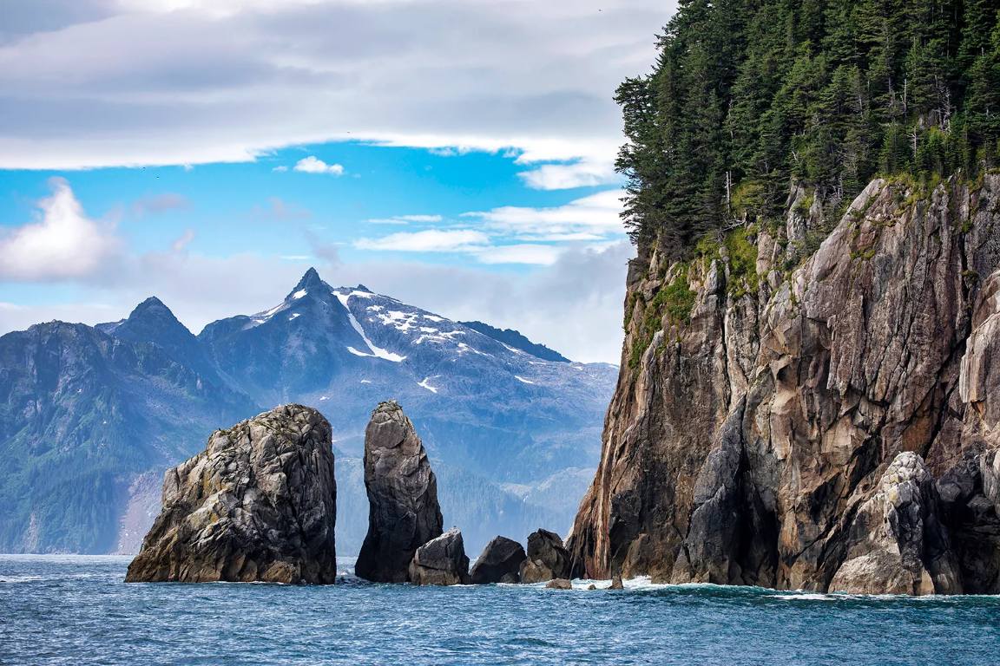

Exit Glacier
Exit Glacier offers an accessible opportunity to see a glacier up close. Trails near the Exit Glacier Nature Center provide views of the ice and signs marking its historical retreat.
Kenai Fjord National Park, a vast landscape portrait of nature and this world. Located on the Kenai Peninsula in south-central Alaska, near the gateway town of Seward, this park holds its iconic Harding Icefield, Exit Glacier Area, and Fjords and Coastlines. Hosting activities like mountaineering, flightseeing and guides for your desired destination.
Get StartedExit Glacier, Harding Icefield, and Coastal Fjords
Exit Glacier offers an accessible opportunity to see a glacier up close. Trails near the Exit Glacier Nature Center provide views of the ice and signs marking its historical retreat.
The Harding Icefield is a vast expanse of ice and snow that feeds many of the park’s glaciers. The challenging Harding Icefield Trail rewards hikers with sweeping views.
The coastal fjords of Kenai Fjords National Park are dramatic, glacier-carved valleys where massive walls of ice meet the ocean. These deep-water inlets are framed by towering cliffs and provide habitat for whales, sea otters, and puffins.
Discover a landscape shaped by ice, where glaciers, mountains, and the ocean meet.

The tidewater glaciers of Kenai Fjords extend directly into the sea, where pieces of blue ice break away into the ocean. These glaciers and the surrounding rock cliffs offer striking views of Alaska’s natural beauty.
Exit Glacier is in the park’s road-accessible area and provides a close look at a changing river of ice. Hikers who climb the Harding Icefield Trail alongside it are rewarded with views of a vast frozen landscape.